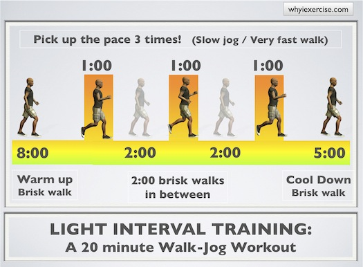
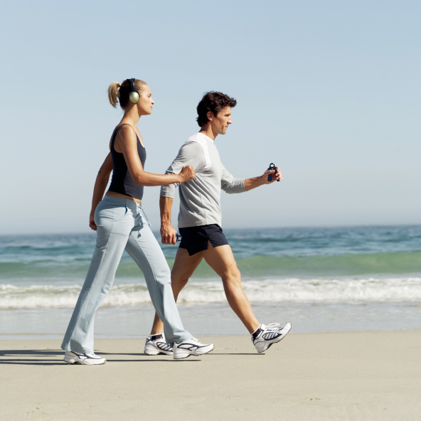
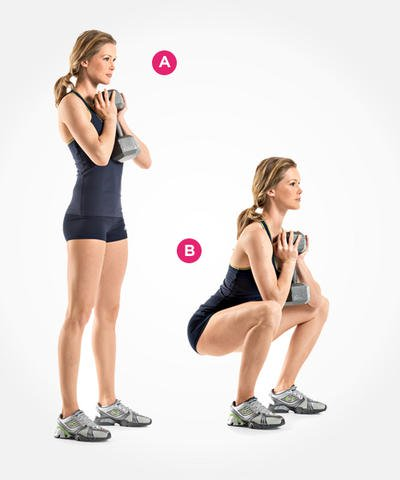
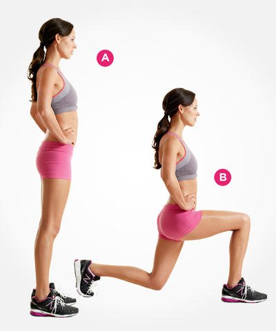

Interval Training
This refers to doing almost any type of exercise at a variable pace. For example, if you are walking or doing push-ups, vary the pace of the exercise. You can walk normally for a minute or so, and then speed up a bit, and then return to normal speed several times. For exercises like push-ups, do a few slowly and do others more quickly and, like walking, repeat these faster and slower intervals several times. Interval training helps the body to adjust its aerobic system (heart rate, breathing, and metabolism) to burn more calories to lose weight and strengthen muscles. The basic idea is to vary the intensity within your workout, instead of going at a steady pace.
Walking
Walking is simple yet powerful. It can help you stay trim, improve cholesterol levels, strengthen bones, keep blood pressure in check, lift your mood and lower your risk for a number of diseases (diabetes and heart disease for example). A number of studies have shown that walking and other physical activities can improve memory and resist age-related memory loss. All you need is a well-fitting and supportive pair of shoes. Start with walking for about 10-15 minutes at a time. Over time you can start to walk farther and faster until you’re walking for 30 to 60 minutes on most days of the week.
Swimming

Swimming can be easily called the perfect workout. The buoyancy of the water supports your body and takes the strain off painful joints so you can move them more fluidly. Research finds that swimming can improve your mental state and put you in a better mood. Water aerobics is another option. These classes help you burn calories and tone up.
Squats
This exercise is an excellent calorie burner because squats use the largest muscle groups in the body. Squats are exercises that consist of an up and down motion of the body that resembles the motion of getting out of a chair. In fact, some trainers suggest that a person new to trying to do squats can practice by getting up and down from a chair. The proper way to begin is to keep your back straight, feet spread apart about shoulder length with both arms extended, knees over the ankles and then go downward with your butt just touching the chair; then return to your original standing position. Eventually, stop using the chair and you'll be doing effective squats. No matter what you do, you should incorporate squats into your routine. If you train for strength, squat using a barbell or holding dumbells in your hands. If you want to train for endurance or cardio, use body-weight squats.
Push-ups

The basic push-up is the classic exercise to strengthen the upper body (chest, shoulders, and triceps) and core (abdominal muscles). Beginners can first do push-ups by spreading their fully extended arms slightly more than shoulder width apart with their hands against an unmovable object like the edge of a kitchen countertop. Then bend your elbows until your chest almost touches the edge of the counter op, allowing only your toes to bend and keeping your back and legs in a straight line. Then push your body away from the countertop until your arms are again fully extended. As you progress, you should use lower stationary objects (for example, a stationary bench) and eventually do the push-up with your hands on the floor.
Lunges
Lunges work the same large muscle groups as the squats, but can work additional leg muscles and improve balance. Lunges are done by taking a big enough step forward that the knee forms about a 90-degree angle. However, you must keep your spine in a neutral position (upright position, no bending forward). Your trailing leg, at the same time, should have its knee come close to the floor and have the toes accept significant body weight. Then, return to a standing position and repeat with the other leg. After you master the lunge, you can vary the exercise by placing the advanced leg to the right or left to mimic more variable movement, such as the angles you might encounter during a nature hike.